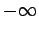
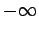

Inhalt Index DeskTop Bronstein

 Funktionen und ihre Darstellung Gebrochenrationale Funktionen
Funktionen und ihre Darstellung Gebrochenrationale Funktionen


Die Funktion
liefert eine gleichseitige Hyperbel, deren Asymptoten parallel zu den Koordinatenachsen verlaufen.
Der Mittelpunkt C liegt bei Dem Parameter a in Gleichung (2.45) entspricht mit
Die Scheitelpunkte A und B der Hyperbel liegen bei bzw.
wobei für  gleiche Vorzeichen genommen werden, für
gleiche Vorzeichen genommen werden, für  verschiedene.
verschiedene.
Die Unstetigkeitsstelle liegt bei Die Funktion nimmt für  von bis  und von
von bis  und von  bis ab. Für
bis ab. Für  wächst die Funktion von bis
wächst die Funktion von bis  und von bis . Extrema gibt es keine.
und von bis . Extrema gibt es keine.